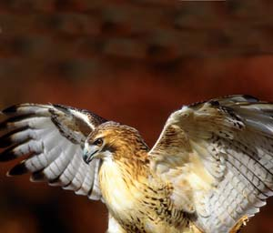
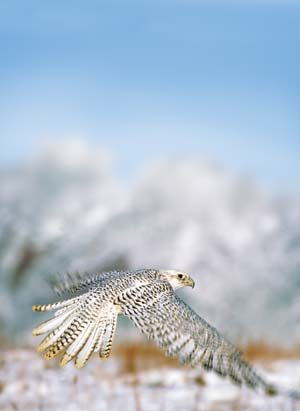
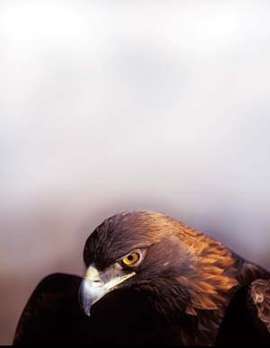
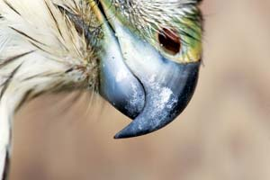
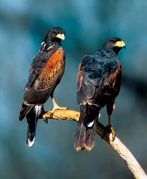
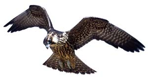
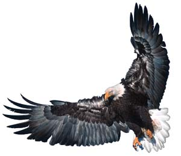
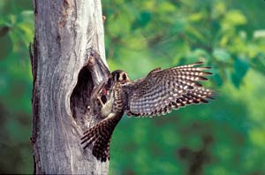

We are, after all, only human. That explains why we can’t fly like birds - and why we so want to. Certainly, like countless other earthbound homo sapiens since the dawn of our time, you’ve watched a bird make graceful circles high in the sky and thought, if only I could do that.
Chances are you weren’t watching just any bird, though. You were probably admiring one of the true masters of the sky - the group of agile, powerful avian hunters known as raptors, or birds of prey. Given their superior aerial abilities, it’s not much of a stretch to imagine not only any human, but any ordinary flying bird - a pigeon, a robin, whatever - also looking up from an earthly perch, thinking, if only I could do that.
“Raptor” isn’t a taxonomic classification, but a catchall term used to refer to eagles, hawks, falcons, kites and owls. Owls are nocturnal raptors, while the others are diurnal, or active during the day. All raptors are meat eaters. Their carnivorous nature doesn’t define them, however; most birds eat meat in some form or other. Rather than diet, it’s the raptors’ modus operandi and their anatomy that distinguish them. Beak to toe, raptors are built to seek out, chase down and gobble up the animal protein they need for sustenance.
The beginning of a victim’s end usually comes via the raptor’s sharp, curved claws: talons. Raptors possess strong legs and, on each foot, four powerful grasping toes, each tipped by a pointed talon. In most species, a single hind toe has the heaviest and longest talon while the other three toes face forward. Just before it strikes, a raptor swings both of its legs forward, almost to the horizontal, putting the full force of its hurtling body behind its outstretched talons.
A raptor’s grip on prey is sure and often deadly. Shorter-taloned raptors such as Cooper’s hawks may simply squeeze, rather than pierce, the life out of their victims. In any case, if the grab itself doesn’t kill, the job is finished by a sharp and distinctly pointed beak designed for cutting and tearing. On most raptors, the upper beak’s cutting edges aren’t straight, but instead have a slight S-shaped contour, like that of a scimitar. In falcons and some others, the S-curve is pronounced and forms a downward-pointing triangular “tooth” that fits into a notch on the lower beak. The tooth slips between a victim’s neck vertebrae to cleanly sever its spinal cord - instant death.
Like all flying birds, raptors are built upon a delicate skeleton. The long wing and leg bones are hollow, reinforced by thin internal braces. And though the beak is solid, the rest of the skull isn’t much sturdier than an eggshell, and consists primarily of a brain cavity and two enormous sockets for the bird’s most extraordinary organs: its eyes.
“Eagle-eyed” and “eyes like a hawk” are hardly empty expressions. Raptors possess visual powers superior to nearly all other animals on Earth. Some eagles can spot prey moving more than a mile away. Compared to the human norm of 20/20 eyesight, a raptor’s visual acuity is roughly 20/8, or about two and a half times better. What we can see at 10 feet, a hawk can see at 25 - at a mere glance, and in finer, richer and more colorful detail.
A raptor’s eyes are huge compared to its body size; an eagle’s eyeballs are larger than an adult human’s. What’s more, each eye is far more densely packed with receptor cells in the fovea, the region in the retina that perceives color and sharpens images. We humans have about 200,000 visual cells per square millimeter of fovea; most raptors have about 1 million. And while humans have only one fovea in each eye, raptors have two.
One, called the “search” fovea, is located near the center of the retina and provides super-high-resolution monocular vision, allowing each eye to see to the side independently. The other, the “pursuit” fovea, is positioned on the retina’s outside curve. It works together with its counterpart in the other eye to give the bird binocular vision, allowing it to see directly forward and to perceive depth. Both visual abilities are essential for an airborne predator. A hawk high in the sky uses its high-res monocular vision to spot and keep a fix on prey as it dives (or, in raptor parlance, stoops), and applies its 3-D binocular vision to judge depth and distance as it closes within striking range or pursues a would-be escapee.
All things considered, a raptor’s signature fierce gaze seems more than justified. Actually, the birds get their glowering, serious look from the bony, feather-covered brows, known as supraorbital ridges, that shade their eyes and thus minimize glare.
Most birds can fly, and a few can do it better than raptors in one particular way or another. Hummingbirds are the hands-down champions of maneuverability, for instance. But no other group of birds commands as wide and breathtaking a repertoire of aerial skills as raptors. A red-tailed hawk wheels high over a wheat field, its namesake tail flashing in the sun. An osprey plunges talons-first into a river and a heartbeat later lifts off, its powerful wings dripping and a wriggling fish in its grip. A prairie falcon dives bulletlike from 2,000 feet, then pulls into a long, stealthy glide inches above a meadow to blindside a ground squirrel.
Raptors’ wings, unlike airplanes’, are supremely flexible, instantly responsive to the shifting whims of the winds and to the wile and will of the pilot. Dozens of flight muscles enable the bird to alter the shape and position not only of its wings overall, but also of individual flight feathers. A hawk may fan its wings into broad planks to catch a ride on air currents, spread its fingerlike wingtips to stabilize, then suddenly collapse its wings to dive for prey. As it descends, the bird controls its direction, elevation and speed by flexing muscles here, adjusting feathers there.
Most raptors have massive flight muscles anchored to a large breastbone to power flapping flight. A few quick pumps can launch a 10-pound golden eagle skyward, its wings mocking gravity. A falcon on the hunt is a blur of wings beating 4½ times a second.
But flapping one’s wings is costly in terms of energy, so most raptors have mastered easier ways to fly: soaring and gliding. The ability to soar - to gain altitude without flapping - is a hallmark of raptors, shared by only a few other birds such as ravens, gulls and albatrosses. The key is the birds’ light weight compared to the surface area of wing and tail.
Raptors soar by catching the winds pushed upward by mountains, trees or buildings, or by riding invisible columns of rising warm air called thermals. Deflected winds buffeted upward along extended ridgelines such as the Appalachian Mountains can carry migrating hawks hundreds of miles, reducing the energy they need by 50 percent to 75 percent. Thermals serve as elevators: jumping-off (or, rather, jumping-up) places for raptors to gain altitude quickly. Once aloft, a raptor can stay in the thermal, riding it in spirals, or leave the bubble of buoyancy to fly or glide. Most raptors use a combination of soaring, gliding and flapping.
Kestrels, falcons, osprey and some hawks also can hover, a trick generally confined to smaller birds. And a handful of hawks, including the red-tailed, can fly in place without flapping: a technique called kiting. It takes binoculars to detect the subtle flicks of wing and tail that suspend the seemingly motionless bird in air.
Here are more detailed looks at some of the major groups of North American birds of prey.
Raptor Royalty: Eagles. Few of the world’s birds are as emblematic as North America’s two eagle species, the instantly recognizable bald eagle - our nation’s symbol - and the majestic golden eagle, the all-powerful “Thunderbird” revered by many Native American tribes.
Size defines an eagle: At 9 to 10 pounds and 2½ feet long, with wingspans up to 7 feet, both species clearly qualify. Golden eagles live primarily in western North America, from Alaska to Mexico, hunting mostly from the air for small mammals and birds. Bald eagles, which range across the entire continent above Mexico except for the Far North, spend most of their time perched near large bodies of water watching for unwary fish or signs of carrion.
Like most raptors, both golden and bald eagles mate for life and build their nest to last, adding new materials atop the old each year. New nests typically measure 5 to 6 feet wide and deep. But over generations, the nests can become massive: one Ohio bald eagle nest, occupied for 35 years, weighed 2 tons when its supporting tree collapsed; another in Florida measured 9½ feet across and 20 feet deep.
Beautiful Bounty: Buteos. Buteos are broad-winged, short-tailed soaring hawks. Most (such as rough-legged, ferruginous and Swainson’s) inhabit open country. Some (such as red-shouldered and broad-winged hawks) favor forests. Gray, Harris’s and zone-tailed hawks occupy only the deep Southwest and points below the border. Others occupy much larger ranges.
North America’s most widely distributed buteo is the red-tailed hawk, a large, stocky, barrel-chested bird with an appetite for almost anything, including rodents, rabbits, skunks, frogs, lizards, toads, turtles, spiders, cats and snakes. You can find one or another of 14 subspecies anywhere on the continent, from Central America north, nearly to the Arctic Circle.
Red-tailed hawks are given to perch-hunting. If you see a large, white-breasted hawk sitting on a utility pole, billboard, fence post or other large perch, it’s likely a red-tailed. (If the hawk is on a narrow wire or the ground, it’s probably not.)
Although most raptors hunt alone, Harris’s hawks hunt their prey cooperatively, much as wolves do, in family groups of about five. The birds will run a rabbit to exhaustion by pursuing it relay-style, with each bird taking a turn chasing. If the animal hunkers down in heavy brush, the hawks surround it and one or two attack on foot to flush it out.
Fast and Feisty: Falcons. Sporting long tails and swept-back wings, falcons are built for speed - and for quickly killing prey. A falcon’s deadliest weapon is its feet, which it can use open or closed. Clenching its toes into fists and delivering a battering-ram blow at dive speeds nearing 200 mph, a peregrine falcon can punch a bird as large as a great blue heron out of the sky. Opening its razor-sharp talons, a peregrine can slice a pigeon’s back to shreds in a single pass.
North America’s falcon species range from the stocky gyrfalcon (our continent’s largest falcon; a resident of Alaska and the Far North) to the robin-size American kestrel, a hovering cavity-nester and the most common and widespread U.S. falcon.
The peregrine falcon may be the world’s most widely distributed diurnal raptor, found on every continent except Antarctica. But in the United States, the use of DDT after World War II sent the peregrine population into a tailspin; in 1963 there were no nesting pairs in the eastern states. The ban of DDT in 1972 and ongoing captive-breeding programs have successfully restored the bird’s populations to sustaining levels. In 1999, the peregrine was removed from the Endangered Species list.
Flight Fantastic: Kites. Bobbing, swerving, hovering in the air, then suddenly diving, these slender, light-bodied raptors are known - and named - for their graceful aerial acrobatics. The Mississippi kite and the swallow-tailed kite sweep the Southeastern skies snatching grasshoppers, dragonflies and cicadas in midair. The gull-like white-tailed kite, which nests from Washington state to Southern California and along the Gulf Coast from Texas to central Florida, prefers rodents.
Our other two kites, the snail kite and the hook-billed, specialize in fresh escargot. The hook-billed, which ranges from the southern gulf to South America, resembles a parrot as it hops among branches searching for tree snails. Central Florida’s snail kite swoops over marshes and snatches fist-size apple snails from plant stems. Perched, it holds the snail fast with a foot and uses its deeply hooked bill like a can opener to cut through to the meat inside.
Ambush Experts: Accipiters. Short-winged, long-tailed and wily, accipiters are agile woodland hawks with a flair for maneuvering through branchy wooded terrain and dashing suddenly into open spaces to grab a meal. Our largest accipiter, the northern goshawk, is uncommon but ranges widely from the Arctic to the southern Rockies. More familiar are our other two species: the blue-backed, orange-breasted Cooper’s hawk - a lanky, crow-size raptor widely dubbed the chicken hawk - and its down-sized near-twin, the sharp-shinned, which is our continent’s smallest hawk.
Accipiters pursue small mammals and birds through the forest at dizzying speed. But they prefer to hunt by ambush, first finding a high perch from which to plot their attack, then pouncing like a cat, spreading their wings over their quarry and holding it to the ground until the life has been crushed or drained from it. Cooper’s hawks will take prey as large as rabbits, pheasants and, yes, chickens; sharpies have more of a taste for mice and songbirds.
Because they live at the top of the food chain, raptors are too often the end-of-the-line victims of persistent poisons in the environment. The peregrine falcon’s and bald eagle’s well-known brush with extinction from the eggshell-thinning impacts of DDT is only one example.
Raptors continue to take the brunt of ill-considered human activities. Each year, hundreds die from heavy-metal and pesticide poisoning, electrocution on power lines and illegal hunting. At the same time, thousands of acres of habitat critical to raptors and the animals they rely upon for food are disappearing to development.
True, because we’re only human we can’t fly. But it is within our power to make our world a safe and sustaining place for raptors - and for all the other creatures who share our planet with us.
If only we could do that.
|
 TOMVEZO.COM Red-tailed hawk |
 RICHARD DAY/DAYBREAK IMAGERY The gyrfalcon is the largest North American falcon, and lives in the Far North and Alaska. |
 RICHARD DAY/DAYBREAK IMAGERY The golden eagle, which ranges from Alaska to Mexico. |
|
 MASLOWSKI PRODUCTIONS The beak of a Cooper’s hawk. Note the downward curve of the beak that’s reminiscent of a scimitar. |
 TOMVEZO.COM Harris’s hawks hunt cooperatively, in family groups. |
 TOMVEZO.COM A juvenile peregrine falcon. Since the early 1960s, the peregrine has rebounded from near-extinction. |
|
 TOMVEZO.COM The bald eagle can have a wingspan of up to 7 feet. |
 MASLOWSKI PRODUCTIONS The American kestrel nests in tree cavities and is the most common falcon in the United States. |
MASLOWSKI PRODUCTIONS The feather of a Cooper’s hawk. |